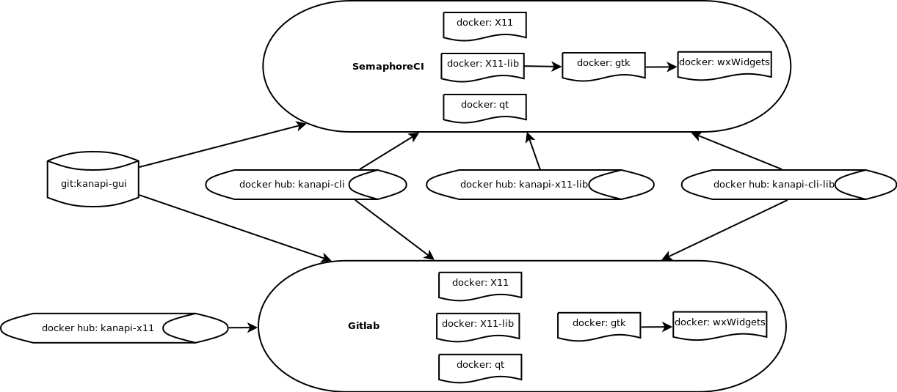
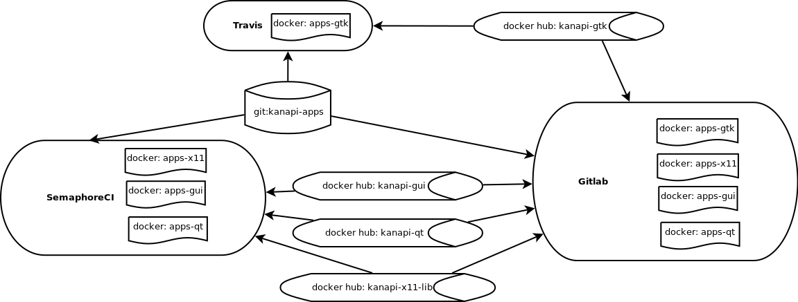

| Build system | targets | config | build time | status |
|---|---|---|---|---|
| Travis | kanapi-sbs:ci | docker | 30 sec | |
| Codeship | bbs | Ubuntu | 30 min | |
| CircleCI | bbs | Ubuntu | 47 min | |
| SemaphoreCI | bbs | chroot | 23 min | |
| Travis | bbs from kanapi-sbs:ci | docker | 34 min | |
| SemaphoreCI | cli | chroot | 1 hour | |
| Shippable | cli-base from kanapi/kanapi-bbs | docker | 51 min | |

| Build system | targets | config | build time | status |
|---|---|---|---|---|
| Shippable | sbs | docker | 33 sec | |
| Travis | kanapi-sbs:ci | docker | 30 sec |  |
| Travis | bbs from kanapi/kanapi-sbs | docker | 36 min | |
| SemaphoreCI | cli from kanapi/kanapi-bbs | docker | 1 hour | |
| Shippable | cli-base from kanapi/kanapi-bbs | docker | 42 min | |
| SemaphoreCI | x11 from kanapi/kanapi-cli | docker | 1 hour 34 min | |
| SemaphoreCI | gtk from kanapi/kanapi-x11-lib | docker | 13 min | |
| SemaphoreCI | qt from kanapi/kanapi-x11-lib | docker | 1 hour | |
| SemaphoreCI | wxWidgets from gtk from kanapi/kanapi-x11-lib | docker | 15 min | |

| Build system | targets | config | build time | status |
|---|---|---|---|---|
| SemaphoreCI | x11 from kanapi/kanapi-cli | docker | 35 min | |
| SemaphoreCI | wxWidgets from gtk from x11-lib from kanapi/kanapi-cli-lib | docker | 39 min | |
| SemaphoreCI | qt from kanapi/kanapi-x11-lib | docker | 1 hour | |

| Build system | targets | config | build time | status |
|---|---|---|---|---|
| SemaphoreCI | apps-gui from kanapi/kanapi-gui | docker | 24 min | |
| SemaphoreCI | apps-qt from kanapi/kanapi-qt | docker | 48 min | |
| SemaphoreCI | apps-x11 from kanapi/kanapi-x11-lib | docker | 19 min | |
| Travis | apps-gtk from kanapi/kanapi-gtk | docker | 40 min |  |